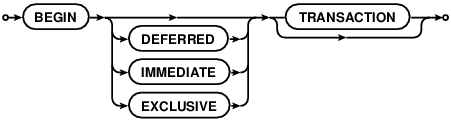
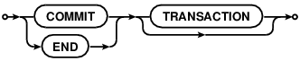
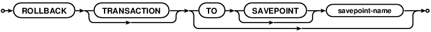

Choose any three.
|
|
SQL As Understood By SQLite
BEGIN TRANSACTION



No changes can be made to the database except within a transaction. Any command that changes the database (basically, any SQL command other than SELECT) will automatically start a transaction if one is not already in effect. Automatically started transactions are committed when the last query finishes.
Transactions can be started manually using the BEGIN command. Such transactions usually persist until the next COMMIT or ROLLBACK command. But a transaction will also ROLLBACK if the database is closed or if an error occurs and the ROLLBACK conflict resolution algorithm is specified. See the documentation on the ON CONFLICT clause for additional information about the ROLLBACK conflict resolution algorithm.
END TRANSACTION is an alias for COMMIT.
Transactions created using BEGIN...COMMIT do not nest. For nested transactions, use the SAVEPOINT and RELEASE commands. The "TO SAVEPOINT name" clause of the ROLLBACK command shown in the syntax diagram above is only applicable to SAVEPOINT transactions. An attempt to invoke the BEGIN command within a transaction will fail with an error, regardless of whether the transaction was started by SAVEPOINT or a prior BEGIN. The COMMIT command and the ROLLBACK command without the TO clause work the same on SAVEPOINT transactions as they do with transactions started by BEGIN.
Transactions can be deferred, immediate, or exclusive. The default transaction behavior is deferred. Deferred means that no locks are acquired on the database until the database is first accessed. Thus with a deferred transaction, the BEGIN statement itself does nothing to the filesystem. Locks are not acquired until the first read or write operation. The first read operation against a database creates a SHARED lock and the first write operation creates a RESERVED lock. Because the acquisition of locks is deferred until they are needed, it is possible that another thread or process could create a separate transaction and write to the database after the BEGIN on the current thread has executed. If the transaction is immediate, then RESERVED locks are acquired on all databases as soon as the BEGIN command is executed, without waiting for the database to be used. After a BEGIN IMMEDIATE, no other database connection will be able to write to the database or do a BEGIN IMMEDIATE or BEGIN EXCLUSIVE. Other processes can continue to read from the database, however. An exclusive transaction causes EXCLUSIVE locks to be acquired on all databases. After a BEGIN EXCLUSIVE, no other database connection except for read_uncommitted connections will be able to read the database and no other connection without exception will be able to write the database until the transaction is complete.
An implicit transaction (a transaction that is started automatically, not a transaction started by BEGIN) is committed automatically when the last active statement finishes. A statement finishes when its prepared statement is reset or finalized. An open sqlite3_blob used for incremental BLOB I/O counts as an unfinished statement. The sqlite3_blob finishes when it is closed.
The explicit COMMIT command runs immediately, even if there are pending SELECT statements. However, if there are pending write operations, the COMMIT command will fail with an error code SQLITE_BUSY.
An attempt to execute COMMIT might also result in an SQLITE_BUSY return code if an another thread or process has a shared lock on the database that prevented the database from being updated. When COMMIT fails in this way, the transaction remains active and the COMMIT can be retried later after the reader has had a chance to clear.
In very old versions of SQLite (before version 3.7.11 circa 2012-03-20) the ROLLBACK will fail with an error code SQLITE_BUSY if there are any pending queries. In more recent versions of SQLite, the ROLLBACK will proceed and pending statements will often be aborted, causing them to return an SQLITE_ABORT or SQLITE_ABORT_ROLLBACK error. In SQLite version 3.8.8 and later, a pending read will continue functioning after the ROLLBACK as long as the ROLLBACK does not modify the database schema.
If PRAGMA journal_mode is set to OFF (thus disabling the rollback journal file) then the behavior of the ROLLBACK command is undefined.
Response To Errors Within A Transaction
If certain kinds of errors occur within a transaction, the transaction may or may not be rolled back automatically. The errors that can cause an automatic rollback include:
- SQLITE_FULL: database or disk full
- SQLITE_IOERR: disk I/O error
- SQLITE_BUSY: database in use by another process
- SQLITE_NOMEM: out or memory
For all of these errors, SQLite attempts to undo just the one statement it was working on and leave changes from prior statements within the same transaction intact and continue with the transaction. However, depending on the statement being evaluated and the point at which the error occurs, it might be necessary for SQLite to rollback and cancel the entire transaction. An application can tell which course of action SQLite took by using the sqlite3_get_autocommit() C-language interface.
It is recommended that applications respond to the errors listed above by explicitly issuing a ROLLBACK command. If the transaction has already been rolled back automatically by the error response, then the ROLLBACK command will fail with an error, but no harm is caused by this.
Future versions of SQLite may extend the list of errors which might cause automatic transaction rollback. Future versions of SQLite might change the error response. In particular, we may choose to simplify the interface in future versions of SQLite by causing the errors above to force an unconditional rollback.